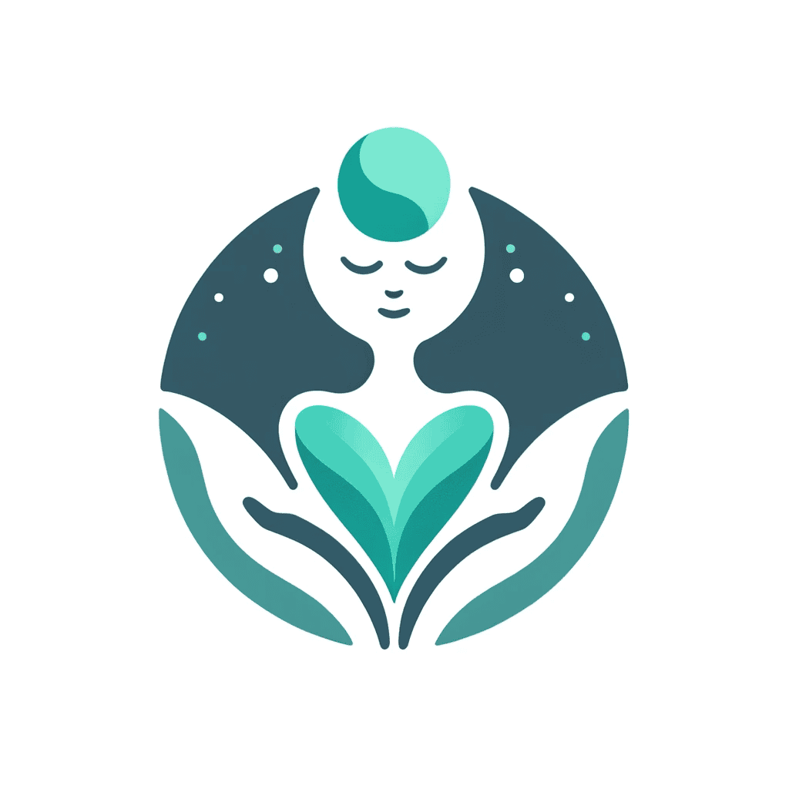

My Projects
Website Full File
My first website showcasing innovative projects, creative solutions, and technical expertise in software development.
MonOP SmartContracts V1-4
Five versions of my Solidity smart contract, each focused on security, encryption, speed, and optimization.

Emotion Recognition AI
An AI model that detects key words and phrases to assess emotion and generate therapist-like responses accordingly.